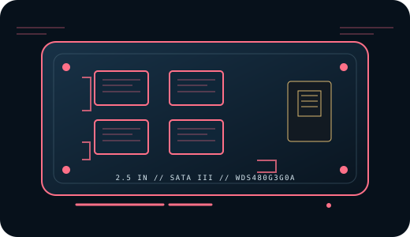

[ INDIVIDUAL COMPONENT // CONSUMER SATA SSD ]
WD Green SATA SSD 480 GB
Capacity-specific record for manufacturer part number WDS480G3G0A. Specifications are restricted to cited manufacturer information; series-wide or typical figures are identified as such rather than treated as guarantees for every device or revision.

IDENTIFICATION: Match the full model/SKU WDS480G3G0A, capacity, label, and firmware before servicing or replacing a drive. This is a consumer 2.5-inch SATA SSD, not an M.2 or NVMe device.
Specifications & compatibility
| Manufacturer / model / SKU | WD Green SATA SSD 480 GB // WDS480G3G0A |
|---|---|
| Capacity | 480 GB nominal capacity. |
| Form factor / interface | 2.5-inch, 7 mm; SATA III 6 Gb/s. |
| NAND | 3D NAND flash in the cited WD Green product documentation; cell type and lot-specific die/revision are not promised. |
| Rated sequential performance | Up to 545 MB/s sequential read and 465 MB/s sequential write in the cited manufacturer specifications. |
| Endurance | No numeric TBW rating for this capacity is stated in the cited official product brief/data sheet. |
| Warranty | 3-year limited warranty, subject to Western Digital regional product terms. |
| Revision / identification | The cited manufacturer sources do not specify a fixed, field-interchangeable internal hardware revision for this consumer SKU. Preserve the full label, serial, firmware, and purchase region; confirm any service/firmware procedure with the manufacturer for the exact unit. |
| Host compatibility | Requires a compatible 2.5-inch SATA data and power connection; this SATA III drive can negotiate with older SATA hosts at their supported link speed. Verify bay height/adapter, connector, BIOS storage mode, operating-system driver, boot support, and TRIM/SMART pass-through through any enclosure or controller. |
Preservation & maintenance
- Record the drive label, full part number, serial, firmware, host/controller, and a read-only SMART snapshot before migration or configuration changes.
- Keep independent, verified backups; endurance, warranty, and SMART indicators do not guarantee remaining life or data retention.
- Do not assume NAND/controller interchangeability across production lots. Use only manufacturer instructions for firmware updates, secure erase, diagnostics, and warranty claims.
Manufacturer sources
- Western Digital — WD Green SATA SSD data sheetManufacturer data sheet for the WD Green 2.5-inch SATA family.
- Western Digital — WD Green SATA SSD product briefSeparate manufacturer product brief; capacity-specific details should be matched to the full model number.
Both references above are HTTPS manufacturer sources. Where a value is not fixed or published for this exact SKU, it is identified as unspecified instead of inferred from a reseller or a different family capacity.